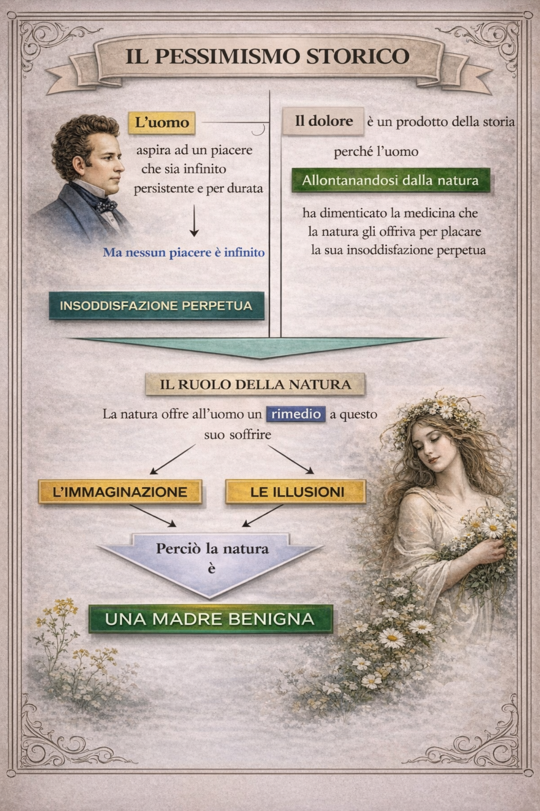

Il Pessimismo Storico di Leopardi
1Cos’è il pessimismo storico? Il pessimismo storico è la prima fase della filosofia di Leopardi. Nasce dalla sua convinzione che l’infelicità dell’uomo sia causata dalla Storia e dalla civiltà, non dalla Natura.
Significato dei due termini
Pessimismo: ogni uomo è destinato a soffrire, perché desidera un piacere infinito, ma ogni piacere reale è limitato. Da questa distanza tra desiderio e realtà nasce il dolore.
Storico: la colpa di questo dolore non è della Natura, ma dell’uomo, che ha costruito una civiltà lontana dalla Natura e ha perso le illusioni che un tempo lo facevano felice.
2Le radici filosofiche: Rousseau e il mito del “buon selvaggio” Leopardi riprende le idee di Jean-Jacques Rousseau, filosofo illuminista, secondo cui:

L’uomo originario era felice, libero, semplice, vicino alla Natura.
È stata la civiltà a corromperlo, rendendolo schiavo, infelice e illuso.
Per Leopardi, il “progresso” non è una conquista, ma una perdita di armonia con la Natura.
3Il ruolo della Natura In questa fase del suo pensiero, la Natura è vista ancora come madre benigna. Offre all’uomo un sollievo al dolore: le illusioni e l’immaginazione. ➡️ Questo è il tempo dell’idillio, della rimembranza e della poesia che nasce dal vago e dall’indefinito.
4. Come funziona il dolore?
Vuole un piacere infinito → può avere solo piaceri limitati
Vuole essere felice → ottiene solo attimi di gioia
Vuole durare nel tempo → tutto ciò che vive, finisce
- Il dolore nasce perché l’uomo è fatto per desiderare ciò che non può avere.
5. Esempi nelle poesie
“L’infinito” → tentativo di superare la realtà finita con l’immaginazione, grazie a visioni vaghe e suoni indefiniti.
“A Silvia” → la Natura ha illuso Silvia (e il poeta) con la promessa della felicità, ma l’ha strappata via troppo presto.
“Il sabato del villaggio” → la vera gioia non è nel giorno della festa, ma nell’attesa: quando la realtà arriva, delude.
6. Riassunto finale
Dolore: nasce dal desiderio di un piacere infinito
Colpa: è dell’uomo, che si è allontanato dalla Natura
Rimedio: illusioni e immaginazione offerte dalla Natura
Visione della Natura: ancora madre benigna, non matrigna
Filosofia di base: sensismo + Rousseau
Poesie chiave: L’infinito, A Silvia, Il sabato del villaggio